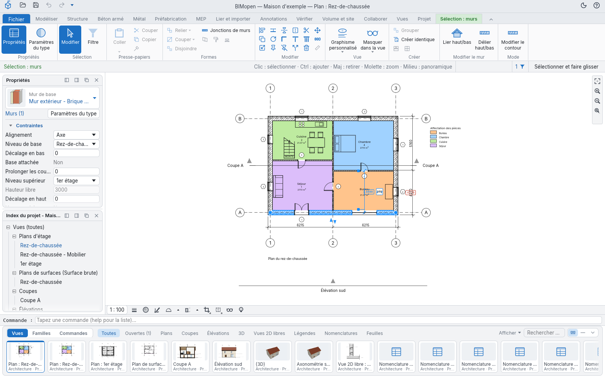
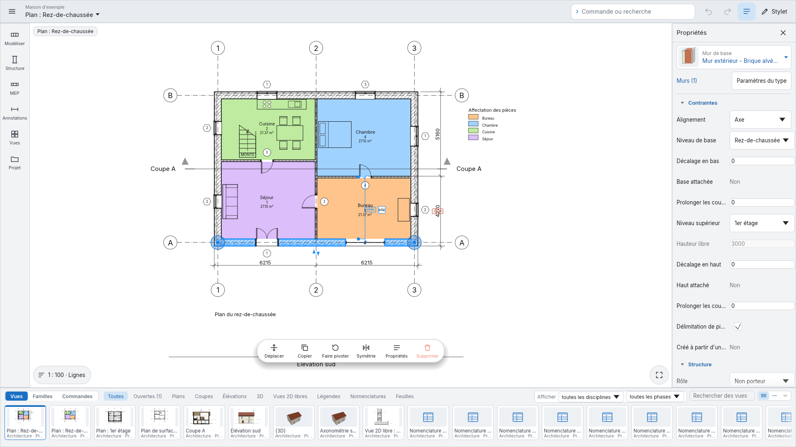
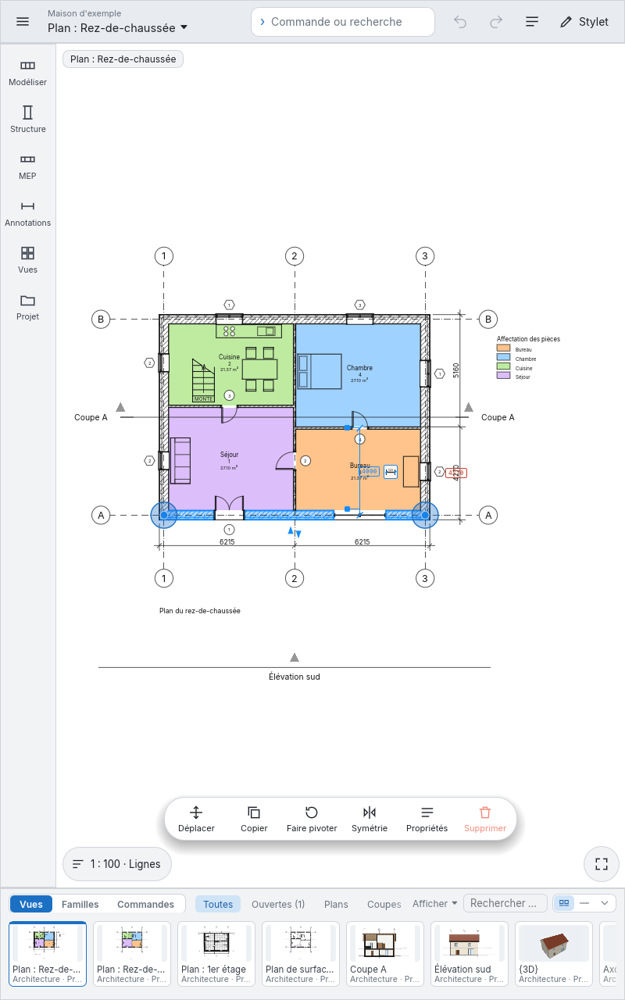
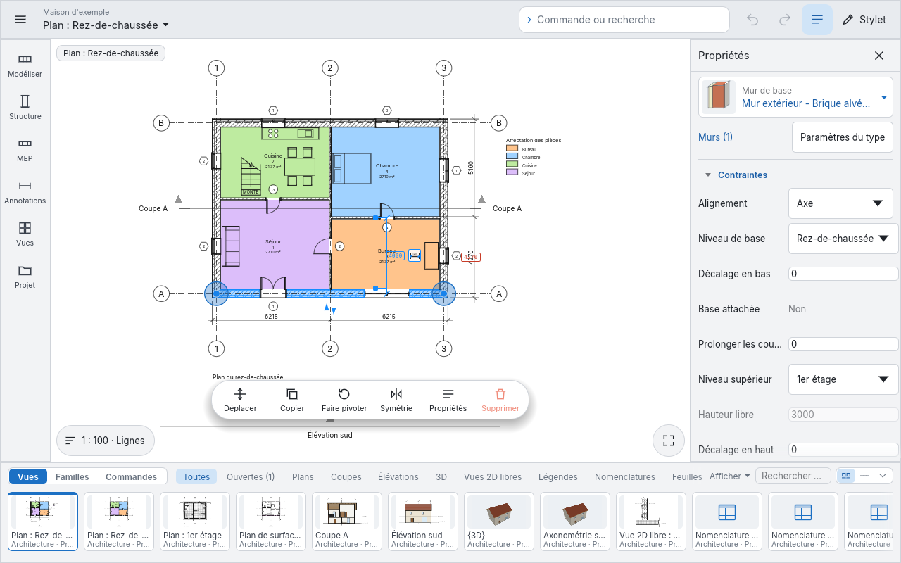
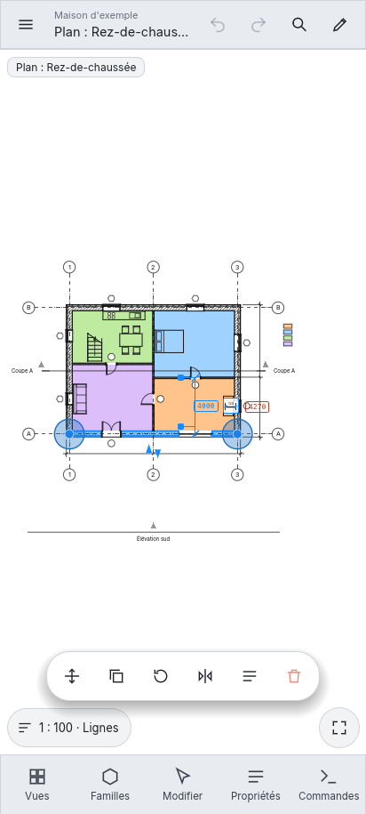
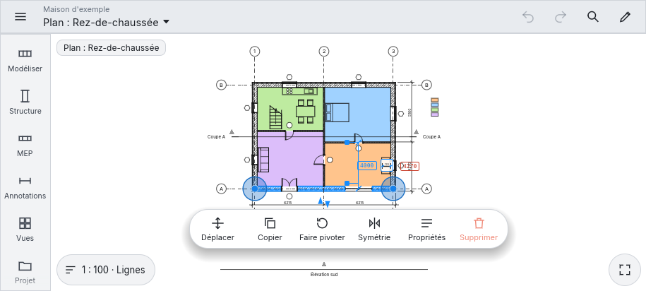

Styles d'interface
BIMopen a deux styles d'interface et un mode tactile. Tous exécutent les mêmes commandes, avec les mêmes noms, les mêmes raccourcis clavier et les mêmes résultats ; seuls l'aspect et la place des outils changent.
- Le style BIMopen, décrit dans L'interface et illustré dans tout ce manuel : la barre latérale, le panneau d'outils, la recherche de commandes, le panneau de l'élément et la barre des vues. BIMopen démarre dans ce style.
- Le style Classique : le ruban avec ses onglets, la barre des options, la palette Propriétés et l'Index du projet dans des panneaux.
- Le mode tactile : la disposition pour les écrans tactiles et les stylets, sur un moniteur tactile, une tablette ou un téléphone.
Choisir le style
- Cliquez sur l'engrenage à l'extrémité droite de la barre supérieure, ou ouvrez le menu de l'application et choisissez Options.
- Sous Interface utilisateur, réglez Interface sur Classique ou BIMopen. BIMopen démarre dans le style BIMopen.
La fenêtre change aussitôt. Le choix est mémorisé, sur l'ordinateur et dans le navigateur, et la session suivante démarre dans le même style. Thème (Clair ou Sombre) s'applique aux deux styles.

En arabe, toute la fenêtre est en miroir, dans chaque style : la barre latérale et le panneau d'outils, ou les palettes, sont à droite, le panneau de l'élément à gauche.
Le style Classique

| Partie | Où | Ce qu'elle contient |
|---|---|---|
| Barre de titre | En haut | La barre d'outils d'accès rapide (Ouvrir…, Enregistrer, Annuler, Rétablir et les outils que vous ajoutez), le projet et la vue active, le thème clair ou sombre et le menu ? |
| Ruban | Sous la barre de titre | Fichier, qui ouvre le menu de l'application, puis les onglets (Modéliser, Structure, Béton armé, Métal, Préfabrication, MEP, Lier et importer, Annotations, Vérifier, Volume et site, Collaborer, Vues, Projet) avec leurs groupes de boutons, et l'onglet contextuel pendant qu'un outil travaille ou que quelque chose est sélectionné |
| Barre des options | Sous le ruban | Les options de l'outil actif, comme le bandeau des options du style BIMopen, et à son extrémité droite ce que l'outil attend ou l'élément sous le curseur, le nombre d'éléments sélectionnés et Sélectionner et faire glisser ; un clic droit dessus propose Ancrer en bas |
| Propriétés et Index du projet | À gauche | L'onglet Propriétés du panneau de l'élément, et l'Index du projet de Vues, sous forme de panneaux qui s'ancrent d'un côté ou de l'autre ou flottent |
| Zone de dessin | Au centre | Les vues, chacune avec sa barre de contrôle de la vue en bas (échelle, détail, cadrage, isolement) et la barre de navigation sur son bord droit (Zoom adapté, Zoom avant, Zoom arrière, Options de zoom) |
| Ligne de commande | Sous la zone de dessin | Le journal et l'invite ; ce que vous tapez dans une vue y arrive |
| Barre des vues et des familles | En bas | La même barre que dans le style BIMopen |
La barre latérale du style BIMopen liste les mêmes onglets que le ruban, avec les mêmes noms et dans le même ordre, et l'onglet contextuel sous le nom Édition ; Vues contient aussi l'Index du projet.
Tout le style Classique
Chaque fonction du style Classique est dans le style BIMopen, une seule fois :
- chaque bouton du ruban est une tuile du panneau d'outils, sous le même onglet de la barre latérale et dans le même groupe, et l'onglet contextuel est Édition dans la barre latérale, choisi de lui-même pendant qu'un outil travaille ou que quelque chose est sélectionné ;
- la marque de BIMopen en haut de la barre latérale ouvre le menu de l'application ; la barre supérieure a annuler, rétablir, les outils d'accès rapide et le menu ? ;
- Vues contient tout l'Index du projet, avec ses menus ;
- une vignette de la barre des vues se fait glisser sur la feuille ouverte, ou sur la vignette d'une feuille, et son menu contextuel a les actions de l'arborescence et Ouvrir dans la fenêtre active ;
- le menu du sélecteur de vue organise les fenêtres des vues (Changer de vue, Mosaïque, Cascade, Agrandir, Répliquer, Fermer masquées) ; Ctrl+Tab passe à la fenêtre précédente ;
- le bouton droit sur une tuile propose Ajouter à la barre d'outils d'accès rapide : l'outil apparaît dans la barre supérieure, agit quel que soit l'onglet ouvert, et son bouton droit propose Supprimer de la barre d'outils d'accès rapide ;
- les infobulles de touches fonctionnent comme sur le ruban : appuyez brièvement sur Alt (ou sur F10), puis la lettre d'un onglet ouvre cet onglet dans la barre latérale (sa lettre s'affiche sur la barre latérale) et les lettres d'un outil le lancent.
Mode tactile
Le Mode tactile dispose l'interface pour les écrans tactiles et les stylets : téléphones, tablettes et moniteurs tactiles. Il exécute les mêmes commandes que les deux styles, avec les mêmes noms ; seule la disposition change, et chaque commande est assez grande pour un doigt.
L'activer
Options ▸ Interface utilisateur ▸ Mode tactile a trois valeurs :
| Valeur | Effet |
|---|---|
| Automatique | Actif là où l'appareil est conçu pour le toucher : dans un navigateur avec le doigt comme pointeur ou une fenêtre d'au plus 900 pixels de large, et sous Android. Sur le bureau il reste éteint |
| Toujours | Toujours actif, sur le bureau aussi (un moniteur tactile, une tablette PC) |
| Jamais | Jamais actif |
BIMopen retient le choix avec les autres préférences. Menu ▸ Quitter le mode tactile ramène l'autre interface jusqu'au prochain démarrage.
Téléphone, paysage et tablette
La disposition suit la place qu'a la fenêtre.
Sur un moniteur tactile, ou toute fenêtre large (ici 1920 × 1080) : la barre latérale à gauche ouvre une palette d'outils pour chaque catégorie (Modéliser, Structure, MEP, Annotations, Vues, Projet), les propriétés restent à droite, la barre des vues et des familles en bas, et le champ Commande ou recherche dans la barre supérieure, à côté d'Annuler, Rétablir et Stylet.

Sur une tablette, à la verticale (800 × 1280) ou à l'horizontale (1280 × 800) : la même disposition que sur un moniteur. Là où la fenêtre est étroite, les propriétés sont rangées, pour laisser la place au dessin : Propriétés dans la barre supérieure les fait revenir.


Sur un téléphone, à la verticale (étroit et haut) : une barre supérieure compacte avec le menu, le projet et la vue (un toucher ouvre les vues), Annuler, Rétablir, Commande ou recherche et Stylet ; le dessin occupe toute la largeur ; cinq grands boutons en bas, Vues, Familles, Outils (Modifier quand quelque chose est sélectionné), Propriétés et Commandes, chacun ouvrant un panneau depuis le bas. Faites glisser la poignée du panneau vers le haut pour l'agrandir, vers le bas pour le réduire ou le fermer ; un toucher à côté le ferme.

Sur un téléphone à l'horizontale (bas et large) : une barre latérale à gauche avec les catégories Modéliser, Structure, MEP, Annotations, Vues et Projet, plus les vues et les propriétés ; les panneaux s'ouvrent à droite.

Les outils sont de grandes tuiles avec une icône et un nom. Un outil encore à venir est grisé, Pas encore disponible ; un outil qui ne fonctionne pas dans la vue 3D (Niveau, Quadrillage, Plan de référence, les annotations) y est grisé, Non disponible dans la vue 3D. Un toucher sur une tuile grisée dit pourquoi.
Pendant qu'un outil travaille, une bande verte sous la barre supérieure montre ses options et
Terminer, qui l'arrête (ou achève une esquisse). Pendant que vous dessinez un mur,
Longueur… ouvre la ligne de commande : tapez la longueur du mur suivant et, si besoin, son
angle, comme 4,5 ou 4,5 90.
Un toucher sélectionne, et les murs sélectionnés montrent de grandes poignées à leurs extrémités. Sur le dessin une barre flottante propose Déplacer, Copier, Faire pivoter, Symétrie, Propriétés et Supprimer ; un appui long ouvre le menu contextuel. En bas à gauche le bouton de la vue montre l'échelle et le style graphique et ouvre Échelle, Détail, Style graphique, Soleil et ombres, Cadrage et Isoler temporairement ; en bas à droite Zoom adapté à la fenêtre.
Gestes et stylet
| Geste | Ce qu'il fait |
|---|---|
| toucher | sélectionne, ou place le point de l'outil actif |
| glisser d'un doigt | comme à la souris : une fenêtre de sélection, une poignée, un élément |
| appui long | le menu contextuel |
| deux doigts | déplacent la vue ; écartez ou rapprochez-les pour zoomer ; dans la vue 3D tournez-les pour faire pivoter le modèle |
| double toucher | adapte la vue à la fenêtre |
Stylet dans la barre supérieure est pour un stylet : le stylet dessine et sélectionne, les doigts ne font que déplacer la vue (un doigt déplace, deux doigts déplacent, zooment et tournent). Une palette du stylet sur le côté du dessin a Sélectionner, Mur, Porte, Fenêtre, Ligne de détail, Alignée, Texte et Autres outils…. Dans un navigateur c'est le navigateur qui distingue le stylet du doigt ; dans l'application de bureau un toucher qui indique une pression est pris pour un stylet.